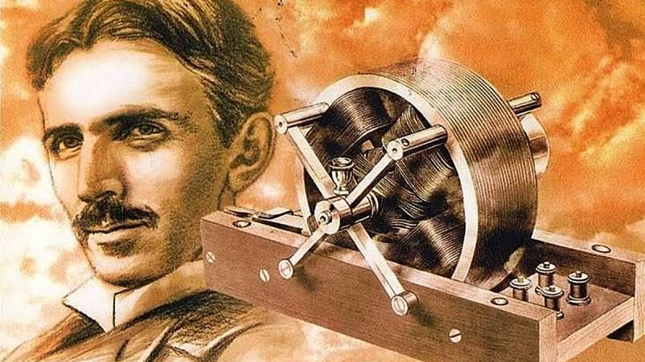
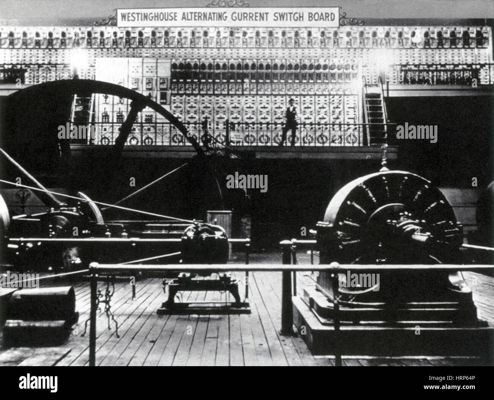
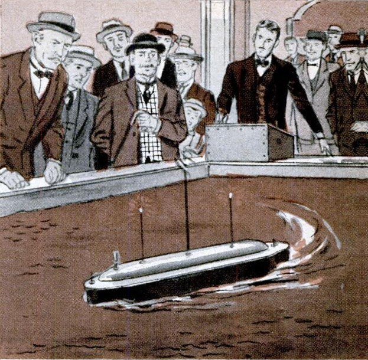

Bobina Tesla

En el verano de 1889, Tesla viajó a la Exposición Universal en París, donde se enteró de los experimentos de Heinrich Rudolf Hertz (realizados en 1886-1888) que demostraron la existencia de radiación electromagnética, incluidas las ondas de radio. Encontró este nuevo descubrimiento "refrescante" y decidió explorarlo más a fondo. Al repetir, y luego expandir, estos experimentos, intentó alimentar una bobina de Ruhmkorff con un alternador de alta velocidad, que había estado desarrollando como parte de un sistema de lámpara de arco mejorado, pero descubrió que la corriente de alta frecuencia sobrecalentaba el núcleo de hierro y fundía el aislamiento entre los devanados principales y secundarios en la bobina. Para solucionar este problema, se le ocurrió su bobina de Tesla con un espacio de aire en lugar de material aislante entre los devanados primarios y secundarios, y un núcleo de hierro que se podía mover a diferentes posiciones dentro o fuera de la bobina.
Iluminación inalámbrica

Después de 1890, Tesla experimentó con la transmisión de potencia mediante acoplamiento inductivo y capacitivo, utilizando altos voltajes de corriente alterna generados con su bobina Tesla. Intentó desarrollar un sistema de iluminación inalámbrico basado en acoplamiento inductivo y capacitivo, y realizó una serie de demostraciones públicas donde encendió tubos de Geissler e incluso bombillas incandescentes en un escenario. Pasó la mayor parte de la década trabajando en variaciones de esta nueva forma de iluminación con la ayuda de varios inversores, pero ninguna de las empresas logró sacar un producto comercial de sus hallazgos.
En 1893, en St. Louis, Misuri, ante el Instituto Franklin de Filadelfia (Pensilvania) y ante la National Electric Light Association, Tesla dijo a los espectadores que estaba seguro de que un sistema como el suyo podría finalmente conducir "señales inteligibles o incluso energía eléctrica a cualquier distancia sin el uso de cables" al conducirlas a través de la Tierra. Pensaba que solo era cuestión de tiempo que el hombre pudiese adaptar las máquinas al engranaje de la naturaleza, declarando: «Antes de que pasen muchas generaciones, nuestras máquinas serán impulsadas por energía obtenida en cualquier punto del universo»
Generador oscilador a vapor
Tratando de encontrar una forma mejor de generar corriente alterna, Tesla desarrolló un alternador accionado con vapor. Lo patentó en 1893 y lo presentó en la Exposición Mundial Colombina de Chicago de ese año. El vapor era forzado hacia el oscilador y se precipitaría a través de una serie de válvulas, empujando un pistón unido a una armadura hacia arriba y hacia abajo. La armadura magnética vibraba hacia arriba y hacia abajo a alta velocidad, produciendo un campo magnético alterno. Este campo inducía a su vez una corriente eléctrica alterna en las bobinas de alambre adyacentes. Eliminó las partes complicadas de una máquina/generadora de vapor, pero nunca se contempló como una solución de ingeniería factible para generar electricidad.
Sistema polifásico y la Exposición de Chicago
A principios de 1893, el ingeniero Benjamin G. Lamme de Westinghouse había progresado mucho desarrollando una versión eficiente del motor de inducción de Tesla, y Westinghouse Electric comenzó a calificar su sistema bifasico completo como el "Sistema Tesla Polifase". Creían que las patentes de Tesla les daban la prioridad sobre otros sistemas de corriente alterna.
Westinghouse Electric le pidió a Tesla que participara en el Exposición Mundial Colombina de Chicago de 1893, donde la compañía tenía un gran espacio en un edificio dedicado a exhibiciones eléctricas. Westinghouse Electric ganó la licitación para iluminar la Exposición con corriente alterna y fue un evento clave en la historia de esta forma de electricidad, ya que la compañía demostró al público estadounidense la seguridad, fiabilidad y eficiencia de un sistema de corriente alterna completamente integrada. Tesla mostró una serie de efectos eléctricos relacionados con la corriente alterna, así como su sistema de iluminación inalámbrico, utilizando una demostración que había realizado anteriormente en toda América y Europa; incluyendo el uso de alto voltaje, y una corriente alterna de alta frecuencia para encender un lámpara de descarga inalámbricamente.
Un observador anotó:
Dentro de la sala se suspendieron dos placas de goma dura cubiertas
con papel de aluminio. Estaban a unos quince pies de distancia, y
servían como terminales de los cables que salían de los
transformadores. Cuando se encendía la corriente, las lámparas o
tubos, que no tenían cables conectados a ellos, sino que estaban
sobre una mesa entre las placas suspendidas, o que podían sostenerse
en la mano en casi cualquier parte de la habitación, se iluminaban.
Estos fueron los mismos experimentos y el mismo aparato mostrado por
Tesla en Londres unos dos años antes, "donde produjeron tanta
maravilla y asombro".
Tesla también explicó los principios del campo magnético rotativo en
un motor de inducción al demostrar cómo hacer que un huevo de cobre
se coloque de punta, usando un dispositivo que él construyó conocido
como el Huevo de Colón, e introdujo su nuevo generador de corriente
alterna con un oscilador alimentado a vapor.
Radiocontrol Remoto
En 1898, Tesla mostró en público un barco que controlaba usando un radiocontrol basado en un cohesor -que denominó "telautomaton"- durante una exposición eléctrica en el Madison Square Garden. La multitud que presenció la demostración hizo afirmaciones escandalosas sobre el funcionamiento del barco, tales como magia, telepatía o que estaba siendo pilotado por un mono entrenado oculto en su interior. Tesla intentó vender su idea al ejército de los EE. UU. como un tipo de torpedo controlado por radio, pero la marina mostró poco interés. El radiocontrol remoto siguió siendo una novedad hasta la Segunda Guerra Mundial, cuando varios países lo usaron en sus programas militares. Tesla aprovechó la oportunidad para demostrar aún más la "Teleautomática" en una conferencia pronunciada en una reunión del Club Comercial de Chicago, mientras viajaba a Colorado Springs, el 13 de mayo de 1899.
Otros Inventos y Descubrimientos Destacables

Entre los más destacables inventos y descubrimientos que han llegado al conocimiento del público en general, se pueden destacar:
- Transferencia inalámbrica de energía eléctrica mediante ondas electromagnéticas. Posteriormente intentó desarrollar un sistema para enviar energía eléctrica sin cables a largas distancias y quiso implementarlo en el proyecto de la torre de Wardenclyffe que tenía el fin de establecer un sistema mundial de comunicaciones y que terminó en fracaso porque antes de que pudiera acabar el proyecto, su inversor, el banquero J. P. Morgan, dejó de financiar las investigaciones de Tesla debido a su inviabilidad financiera, además de que Guillermo Marconi logró realizar transmisiones de señales de radio a través del Atlántico en primer lugar, haciendo perder el interés de Morgan por el proyecto. Se conservan algunas películas de la torre.
- Generador de corriente alterna.
- Bombilla sin filamento o lámpara fluorescente.
- Dispositivos de electroterapia o diagnóstico, especialmente un generador de rayos X de un solo electrodo. También hay un registro de patente de un generador de ozono.
- Turbina sin paletas, operada por la fricción del fluido.
- Bobina de Tesla: entregaba en la salida una energía de alto voltaje y alta frecuencia.
- Principios teóricos del radar.
- Teslascopio.
- Control remoto.
- Control remoto.
- Aviones STOL.
- Estudios sobre Rayos X.
- Radiogoniómetro.
- Telegeodinámica eléctrica